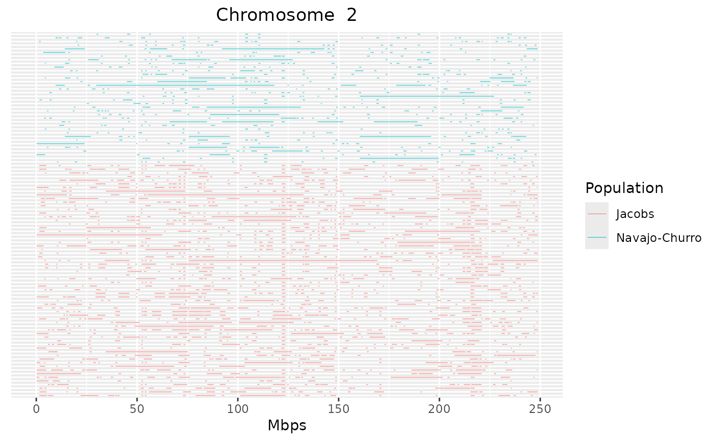
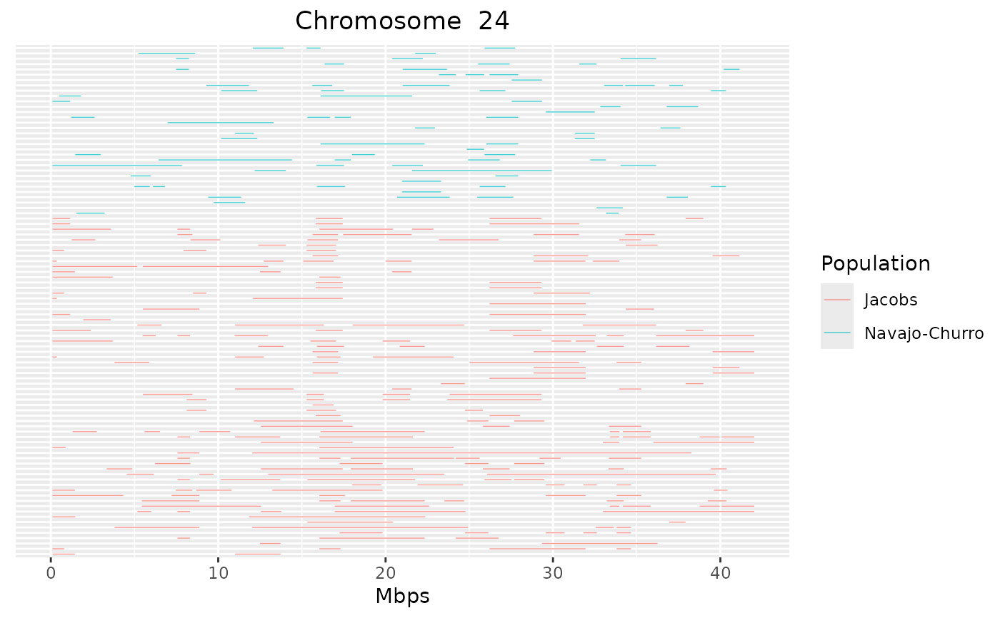

Detect runs of homozygosity using a sliding-window approach
Source:R/gt_roh_window.R
gt_roh_window.RdThis function uses a sliding-window approach to look for runs of homozygosity
(or heterozygosity) in a diploid genome. This function uses the package
selectRUNS, which implements an approach equivalent to the one in PLINK.
Usage
gt_roh_window(
x,
window_size = 15,
threshold = 0.05,
min_snp = 3,
heterozygosity = FALSE,
max_opp_window = 1,
max_miss_window = 1,
max_gap = 10^6,
min_length_bps = 1000,
min_density = 1/1000,
max_opp_run = NULL,
max_miss_run = NULL
)Arguments
- x
- window_size
the size of sliding window (number of SNP loci) (default = 15)
- threshold
the threshold of overlapping windows of the same state (homozygous/heterozygous) to call a SNP in a RUN (default = 0.05)
- min_snp
minimum n. of SNP in a RUN (default = 3)
- heterozygosity
should we look for runs of heterozygosity (instead of homozygosity? (default = FALSE)
- max_opp_window
max n. of SNPs of the opposite type (e.g. heterozygous snps for runs of homozygosity) in the sliding window (default = 1)
- max_miss_window
max. n. of missing SNP in the sliding window (default = 1)
- max_gap
max distance between consecutive SNP to be still considered a potential run (default = 10^6 bps)
- min_length_bps
minimum length of run in bps (defaults to 1000 bps = 1 kbps)
- min_density
minimum n. of SNP per kbps (defaults to 0.1 = 1 SNP every 10 kbps)
- max_opp_run
max n. of opposite genotype SNPs in the run (optional)
- max_miss_run
max n. of missing SNPs in the run (optional)
Value
A dataframe with RUNs of Homozygosity or Heterozygosity in the analysed dataset. The returned dataframe contains the following seven columns: "group", "id", "chrom", "nSNP", "from", "to", "lengthBps" (group: population, breed, case/control etc.; id: individual identifier; chrom: chromosome on which the run is located; nSNP: number of SNPs in the run; from: starting position of the run, in bps; to: end position of the run, in bps; lengthBps: size of the run)
Details
This function returns a data frame with all runs detected in the dataset. This data frame can then be written out to a csv file. The data frame is, in turn, the input for other functions of the detectRUNS package that create plots and produce statistics from the results (see plots and statistics functions in this manual, and/or refer to the detectRUNS vignette).
If the gen_tibble is grouped, then the grouping variable is used to
fill in the group table. Otherwise, the group 'column' is filled with the
same values as the 'id' column
Examples
# run the example only if we have the package installed
# \donttest{
if (requireNamespace("detectRUNS", quietly = TRUE)) {
sheep_ped <- system.file("extdata", "Kijas2016_Sheep_subset.ped",
package = "detectRUNS"
)
sheep_gt <- tidypopgen::gen_tibble(sheep_ped,
backingfile = tempfile(),
quiet = TRUE
)
sheep_gt <- sheep_gt %>% group_by(population)
sheep_roh <- gt_roh_window(sheep_gt)
detectRUNS::plot_Runs(runs = sheep_roh)
}
#> N. of RUNS for individual H114 is: 27
#> N. of RUNS for individual H115 is: 29
#> N. of RUNS for individual H116 is: 28
#> N. of RUNS for individual H26 is: 25
#> N. of RUNS for individual H32 is: 21
#> N. of RUNS for individual H38 is: 16
#> N. of RUNS for individual H44 is: 14
#> N. of RUNS for individual H56 is: 14
#> N. of RUNS for individual H50 is: 29
#> N. of RUNS for individual H27 is: 18
#> N. of RUNS for individual H33 is: 21
#> N. of RUNS for individual H39 is: 17
#> N. of RUNS for individual H45 is: 18
#> N. of RUNS for individual H51 is: 29
#> N. of RUNS for individual H57 is: 20
#> N. of RUNS for individual H28 is: 13
#> N. of RUNS for individual H34 is: 18
#> N. of RUNS for individual H40 is: 28
#> N. of RUNS for individual H46 is: 29
#> N. of RUNS for individual H52 is: 20
#> N. of RUNS for individual H58 is: 13
#> N. of RUNS for individual H29 is: 17
#> N. of RUNS for individual H35 is: 27
#> N. of RUNS for individual H41 is: 19
#> N. of RUNS for individual H47 is: 22
#> N. of RUNS for individual H53 is: 25
#> N. of RUNS for individual H59 is: 28
#> N. of RUNS for individual H30 is: 19
#> N. of RUNS for individual H42 is: 20
#> N. of RUNS for individual H48 is: 32
#> N. of RUNS for individual H54 is: 20
#> N. of RUNS for individual H60 is: 17
#> N. of RUNS for individual H31 is: 15
#> N. of RUNS for individual H37 is: 17
#> N. of RUNS for individual H43 is: 14
#> N. of RUNS for individual H49 is: 19
#> N. of RUNS for individual H55 is: 33
#> N. of RUNS for individual H1 is: 21
#> N. of RUNS for individual H9 is: 13
#> N. of RUNS for individual H17 is: 29
#> N. of RUNS for individual H2 is: 19
#> N. of RUNS for individual H10 is: 20
#> N. of RUNS for individual H19 is: 22
#> N. of RUNS for individual H3 is: 25
#> N. of RUNS for individual H11 is: 21
#> N. of RUNS for individual H20 is: 36
#> N. of RUNS for individual H4 is: 20
#> N. of RUNS for individual H12 is: 17
#> N. of RUNS for individual H21 is: 25
#> N. of RUNS for individual H13 is: 22
#> N. of RUNS for individual H22 is: 30
#> N. of RUNS for individual H6 is: 17
#> N. of RUNS for individual H14 is: 20
#> N. of RUNS for individual H7 is: 31
#> N. of RUNS for individual H15 is: 15
#> N. of RUNS for individual H24 is: 22
#> N. of RUNS for individual H8 is: 23
#> N. of RUNS for individual H16 is: 35
#> N. of RUNS for individual H25 is: 22
#> N. of RUNS for individual H64 is: 30
#> N. of RUNS for individual H62 is: 20
#> N. of RUNS for individual H63 is: 11
#> N. of RUNS for individual H118 is: 30
#> N. of RUNS for individual H119 is: 27
#> N. of RUNS for individual H120 is: 28
#> N. of RUNS for individual H121 is: 31
#> N. of RUNS for individual H122 is: 31
#> N. of RUNS for individual H123 is: 22
#> N. of RUNS for individual H124 is: 31
#> N. of RUNS for individual H125 is: 22
#> N. of RUNS for individual H126 is: 26
#> N. of RUNS for individual H127 is: 28
#> N. of RUNS for individual H128 is: 33
#> N. of RUNS for individual H129 is: 19
#> N. of RUNS for individual H130 is: 30
#> N. of RUNS for individual H131 is: 33
#> N. of RUNS for individual H132 is: 30
#> N. of RUNS for individual H133 is: 33
#> N. of RUNS for individual H134 is: 27
#> N. of RUNS for individual H135 is: 27
#> N. of RUNS for individual H136 is: 17
#> N. of RUNS for individual H137 is: 33
#> N. of RUNS for individual H138 is: 23
#> N. of RUNS for individual H139 is: 32
#> N. of RUNS for individual H140 is: 27
#> N. of RUNS for individual H141 is: 28
#> N. of RUNS for individual H142 is: 27
#> N. of RUNS for individual H143 is: 24
#> N. of RUNS for individual H144 is: 26
#> N. of RUNS for individual H145 is: 32
#> N. of RUNS for individual H146 is: 23
#> N. of RUNS for individual H147 is: 23
#> N. of RUNS for individual H148 is: 25
#> N. of RUNS for individual H149 is: 26
#> N. of RUNS for individual H150 is: 31
#> N. of RUNS for individual H151 is: 36
#> N. of RUNS for individual H152 is: 26
#> N. of RUNS for individual H153 is: 27
#> N. of RUNS for individual H154 is: 31
#> N. of RUNS for individual H155 is: 32


# }